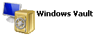

Configure OZW User in the Credential Manager
- A user account must exist and be enabled in the OZW that can be used to connect the adapter (OZW user account). A user security configuration is required in the Credential Manager of the computer where the OZW adapter will be installed.
NOTE: You can install the OZW adapter software on any networked computer that can connect to the OZW device and to Desigo CC. Typically, you want to install it on the Desigo CC server station.
- Press the Windows key on the keyboard or click the Windows Start icon or open the Windows Control Panel.
- Start typing (in Control Panel, search for) credential manager, and select the Credential Manager icon .
- The Credential Manager window displays.
- Select WindowsVault

.
NOTE: If multiple credential vault icons display, make sure to select WindowsVault: . - Select Add a generic credential.
- In the Add a Generic Credential page, do one of the following:
- In the Internet or network address field, enter the User name, then enter User name (again) and Password of the OZW user account, and click OK.
NOTE: Indicating the user name in the Internet or network address field results in the same account being used for all OZW devices (which must all be configured to allow connection from the same user account). - In the Internet or network address field, enter the full network path of the OZW device (for instance https://192.168.1.100), then enter User name and Password of the OZW user account, and click OK.
NOTE: Indicating a specific OZW device in the Internet or network address field results in the account being used for that OZW device only. This individual setting overrides the previous broad setting that you may also add as an additional credential, for instance if a you have a number of OZW devices with the same user name and password and one that requires a different user name and/or password. - Close the Credential Manager window.